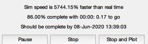
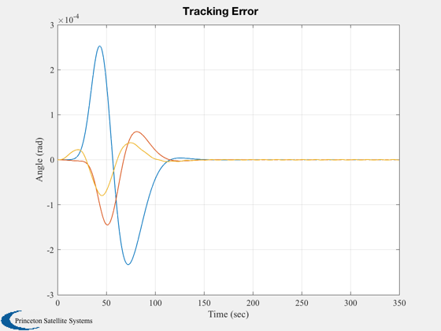
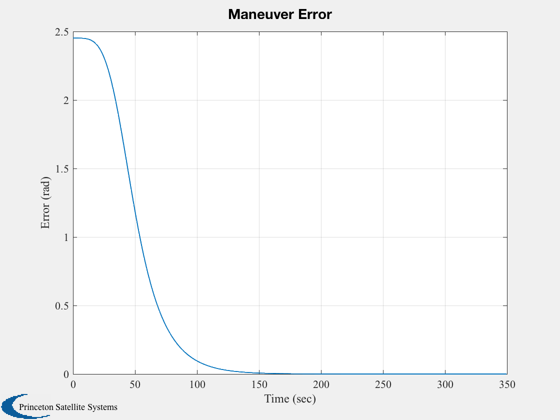
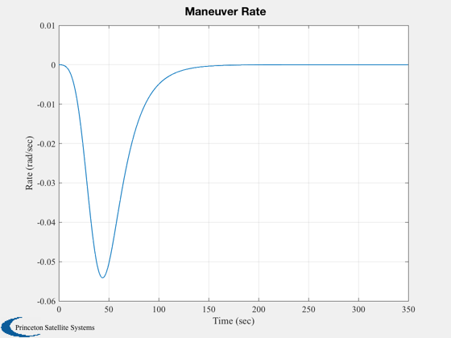
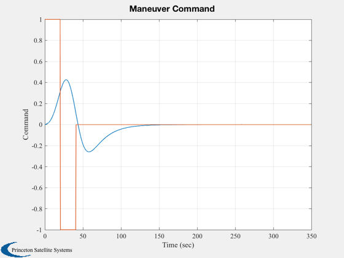
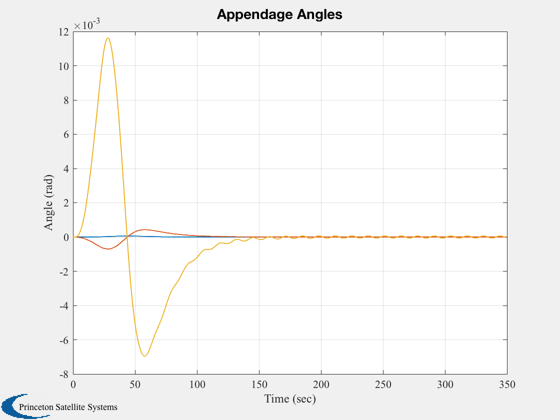
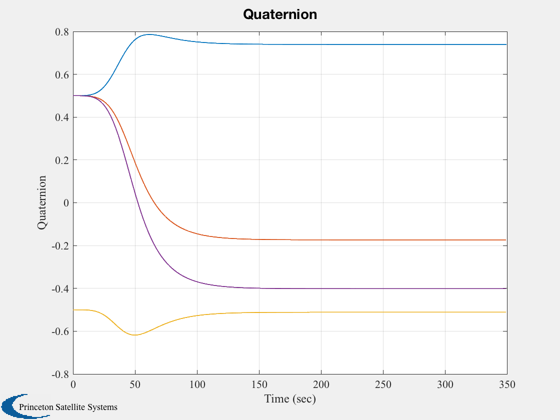
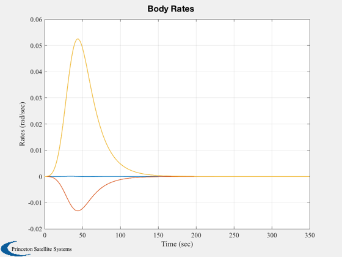
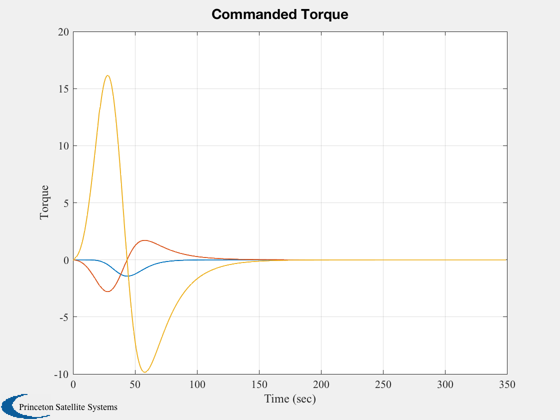
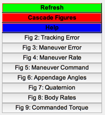

Simulate the fast reorientation system.
This system rotates a spacecraft about any arbitrary axis and automatically avoids exciting selected oscillatory modes. It uses shaping filters to do this. This causes phase lag, but in this application that does not pose a problem. A similar system is used on GGS Polar.
------------------------------------------------------------------------- See also FRSTarg, FRSMPlan, FRSCGen, FTBRef%, ShapeFlt, QMult, QPose, QTForm, Plot2D, TimeGUI, RK4, Unit, TBModel -------------------------------------------------------------------------
Contents
- Global for the TimeGUI
- Simulation time step
- The spacecraft
- Design the shaping filter
- Set up the parameters
- Initialize the state vector
- Compute the quaternion that will rotate the spacecraft to the target
- The maximum allowable acceleration in rad/sec^2
- The spacecraft inertia
- PD Controller
- Plotting variables
- Start the maneuver
- Initialize the time display
- Plot the results
%-------------------------------------------------------------------------- % Copyright (c) 1997-1998 Princeton Satellite Systems, Inc. % All rights reserved. %-------------------------------------------------------------------------- % Since version 2.
Global for the TimeGUI
%------------------------ global simulationAction simulationAction = ' ';
Simulation time step
%---------------------
dT = 0.5;
n = 5;
nSim = 700;
The spacecraft
%---------------
tBDS.x0 = [ 0 0 0 ]';
tBDS.x1 = [ 0 0 5 ]';
tBDS.l1 = [ 0 0 10 ]';
tBDS.n0 = 1000.0;
tBDS.n1 = 0.1;
tBDS.i0 = [ 2300 0 0; 0 4500 0; 0 0 6600];
tBDS.i1 = [ 100 0 0; 0 100 0; 0 0 100];
tBDS.torque = zeros(6,1);
tBDS.force = zeros(6,1);
Design the shaping filter
%--------------------------
wn = [0.4835 0.9781 1.2437];
wnw = [0.5 0.5 0.5 ];
wD = [-40 -40 -40];
[af,bf,cf,df] = ShapeFlt( wn, wnw, wD, 0.2, dT );
xf = zeros(length(af),1);
Set up the parameters
%----------------------
qRefTo0 = Unit( [ 0.5 0.5 -0.5 0.5 ]' );
xmodel = zeros(2,1);
utargetref = Unit([ 0.1 0.5 -0.4]');
usensor0 = [1;0;0];
Initialize the state vector
%----------------------------
x = [ qRefTo0' 1 0 0 0 0.0 0.0 0.0 0.0 0.0 0.0 ]';
Compute the quaternion that will rotate the spacecraft to the target
%---------------------------------------------------------------------
qRefTo1 = FRSTarg( qRefTo0, usensor0, utargetref );
The maximum allowable acceleration in rad/sec^2
%------------------------------------------------
maxaccel = 0.006;
The spacecraft inertia
%------------------------ [wDot, hbody, iner] = TBModel( x(9:11), x(12:14), x(5:8), tBDS.x0, tBDS.x1,... tBDS.l1, tBDS.i0, tBDS.i1, tBDS.n0, tBDS.n1, tBDS.torque, tBDS.force ); iCore = iner(1:3,1:3); [qRefTo0i, axis0, maxaccel, nhalf, tbbscale, xmodel, umnvr] = ... FRSMPlan( qRefTo0, maxaccel, dT, iCore, qRefTo1 );
PD Controller
%--------------
rateGain = 2.0*0.7071*0.1*diag(iCore);
angleGain = 2.0*0.1^2*diag(iCore);
Plotting variables
%-------------------
anglePlot = zeros(3,nSim);
ratePlot = zeros(1,nSim);
errorPlot = zeros(1,nSim);
a1Plot = zeros(3,nSim);
q0Plot = zeros(4,nSim);
tPlot = zeros(1,nSim);
uMnvrPlot = zeros(2,nSim);
wPlot = zeros(3,nSim);
tCPlot = zeros(3,nSim);
Start the maneuver
%-------------------
t = 0;
dTSim = dT/n;
Initialize the time display
%---------------------------- tToGoMem.lastJD = 0; tToGoMem.lastStepsDone = 0; tToGoMem.kAve = 0; ratioRealTime = 0; [ ratioRealTime, tToGoMem ] = TimeGUI( nSim, 0, tToGoMem, 0, dTSim, 'FRSTest' ); for i = 1:nSim % Display the status message %--------------------------- [ ratioRealTime, tToGoMem ] = TimeGUI( nSim, i, tToGoMem, ratioRealTime, dTSim ); % FRS Gommand generator %---------------------- [qRefTo0, modelrate, tFRS, xmodel, umnvrf, umnvr, xf] = FRSCGen( axis0,... af, bf, cf, df, xmodel, tbbscale, qRefTo0i, umnvr, xf, dT, nhalf,... x(9:11), iCore, maxaccel, i ); % Spacecraft PD %-------------- angleError = QMult( QPose(x(1:4)), qRefTo0 ); rateError = x(9:11) - modelrate; pd = - rateGain.*rateError - angleGain.*angleError(2:4); % Quantities for output of the simulation %---------------------------------------- uMnvrPlot(:,i) = [umnvrf;umnvr]; anglePlot(:,i) = angleError(2:4); ratePlot(i) = axis0'*x(9:11) ; tPlot(i) = t; a1Plot(:,i) = 2*x(6:8); q0Plot(:,i) = x(1:4); wPlot(:,i) = x(9:11); tCPlot(:,i) = tFRS; errorPlot(i) = acos( utargetref' * QTForm( qRefTo0, usensor0 ) ); % Add the FRS torque and pd torque %--------------------------------- tBDS.torque(1:3) = tFRS + pd; % Simulation %----------- for k = 1:n x = RK4( @FTBRef, x, dTSim, t, tBDS ); t = t + dTSim; end % Time control %------------- switch simulationAction case 'pause' pause simulationAction = ' '; case 'stop' return; case 'plot' break; end end j = 1:nSim; tPlot = tPlot(j);
Plot the results
%----------------- Plot2D( tPlot, anglePlot(:,j), 'Time (sec)', 'Angle (rad)', 'Tracking Error' ) Plot2D( tPlot, errorPlot(j), 'Time (sec)', 'Error (rad)', 'Maneuver Error' ) Plot2D( tPlot, ratePlot(j), 'Time (sec)', 'Rate (rad/sec)', 'Maneuver Rate' ) Plot2D( tPlot, uMnvrPlot(:,j), 'Time (sec)', 'Command', 'Maneuver Command' ) Plot2D( tPlot, a1Plot(:,j), 'Time (sec)', 'Angle (rad)', 'Appendage Angles' ) Plot2D( tPlot, q0Plot(:,j), 'Time (sec)', 'Quaternion', 'Quaternion' ) Plot2D( tPlot, wPlot(:,j), 'Time (sec)', 'Rates (rad/sec)', 'Body Rates' ) Plot2D( tPlot, tCPlot(:,j), 'Time (sec)', 'Torque', 'Commanded Torque' ) DispWithTitle(qRefTo0,'qRefTo0'); DispWithTitle(qRefTo1,'qRefTo1'); TimeGUI('close'); Figui; %--------------------------------------
qRefTo0 0.739652686203895 -0.173394343487369 -0.511390928781079 -0.401656100910185 qRefTo1 0.739652658406988 -0.173394405597533 -0.511390892405858 -0.401656171598663        